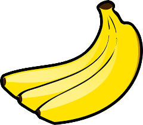

<!--
  Generated template for the GamePage page.

  See http://ionicframework.com/docs/components/#navigation for more info on
  Ionic pages and navigation.
-->
<ion-header>

  <ion-navbar>
    <ion-title>{{ smn }} - {{ stn }}</ion-title>
  </ion-navbar>

</ion-header>


<ion-content class="bg-image">
  <ion-slides (ionSlideDidChange)="slideChanged()">
    <ion-slide>
        
      <ion-card-content>
        Répondez à un maximum de questions dans le temps imparti
        <button ion-button round class="btnY" (click)="gameStart()">Démarrer</button>
      </ion-card-content>
    </ion-slide>
    <ion-slide *ngFor="let q of game; let i=index">
      <ion-card class="bg-sunl">
        <ion-card-header>
          <h1>Question {{ i + 1 }}</h1>
        </ion-card-header>
        <ion-card-content>
          {{ q[1] }}
        </ion-card-content>
        <ion-card-content>
          Réponse : {{ q[2] }}
        </ion-card-content>
        <ion-row>
          <ion-col>
            <button ion-button color="danger" round (click)="ko(i)"><ion-icon name="close"></ion-icon></button>
          </ion-col>
          <ion-col>
            <button ion-button color="secondary" round (click)="ok(i)"><ion-icon name="checkmark"></ion-icon></button>
          </ion-col>
        </ion-row>
      </ion-card>
    </ion-slide>
    <ion-slide>
        
        <ion-card-header class="bg-sunl">
          <h1>Manche terminée</h1>
        </ion-card-header>
        <ion-card-content class="bg-sunl">
        Vous avez marqué {{ score }} bananapoints
        <br>
        Vous avez bien répondu à {{ bonnesReponses }} questions
        <br>
        Vous vous êtes trompé {{ mauvaisesReponses }} fois
      </ion-card-content>
    </ion-slide>
  </ion-slides>
  <ion-item>
    <timer [timeInSeconds]="30"></timer>
  </ion-item>
</ion-content>
